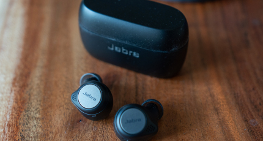

BREAKING TECH NEWZZ
Newton Mail founder returns with launch of personal net worth tracker, Kubera
Sarah Perez
9:34 pm IST •Nov 18, 2020
Serial entrepreneur Rohit Nadhani, who last sold his Newton email app to Essential in 2018— an app so popular it’s been saved from shutting down multiple times — is today launchin...

Max Q: Huge week ahead for SpaceX and Virgin Orbit
Darrell Etherington
8:52 am IST •Nov 19, 2020
This week could be the biggest week to date for private spaceflight, with landmark launch attempts coming from both Virgin Orbit and SpaceX . Virgin Orbit is looking to join the elite club of priva...
China set to launch Mars probe and rover mission in July
Darrell Etherington
12:12 pm IST •Nov 19, 2020
China’s space program will launch a Mars mission in July, according to its current plans. This will include deploying an orbital probe to study the red planet, and a robotic, remotely-control...
Jabra’s Elite Active 75t earbuds offer great value and sound for both workouts and workdays
Jorge Sanfaer
6:00 pm IST •Nov 19, 2020
Technology improvements over the past few years mean that most fully wireless earbuds are a lot better than they used to be. That has led to something of a narrowing of the field among competitors ...